H&E → DM1 image classifier
데이터 정의서 / DATA DEFINITIONS — Paper 2 image-DM1 페이지가 실제로 사용한 데이터·점수·그룹·도면 출처 (open by default — click to fold)
A. COHORTS — 본 페이지 모든 분석에 사용된 코호트
| 코호트 | 출처/공개 | 모달리티 | n | 역할 (이 paper) |
|---|---|---|---|---|
| GSE250521 | GEO · Liao 2025 Cell Rep Med | H&E + 10× Visium ST | 16 슬라이드 (PT/PTC/LPTC/ATC × 4) | Phase 1 spatial validation 코호트 (kill-switch ≥ 5/16) |
| TCGA-THCA | GDC public | diagnostic WSI + RNA-seq | 89 manifest → 88 features → 59 binary (29 DM1 / 30 DM2) + 30 not_DM 보류 | Phase 2 분류 학습/평가 (5-fold CV) |
| UNI Mass-100K | Mahmood Lab · HuggingFace gated | 학습 corpus (encoder) | 100K WSIs · 100M tiles | Tile encoder weights (병리 사전학습) |
| ImageNet-21k | 공개 | 학습 corpus (encoder) | ~14M natural images | Tile encoder fallback (timm vit_large_patch16_224) |
| Korean K2 (PRJEB11591) | ENA · Yoo 2016 SNU-GMI | RNA-seq (n=260) · H&E retrieval 진행 중 | — | 외부 검증 (FFPE, retrieval 단계) |
B. SCORES / GENE PANELS — 사용된 점수와 정의
| 점수 | 정의 | 방향성 | 사용 위치 |
|---|---|---|---|
| 8-gene RAI_8 panel (DM1 signature) | RandomForest-ranked from 55-gene curated pool with drivers excluded by design (Paper 1) | Higher = DM1-like / dedifferentiated | Phase 1 spot-level DM1 score · Phase 2 라벨 정의 |
| UNI PC1 (per-slide) | per-slide tile feature matrix의 PCA 1st component | 슬라이드별 부호 유동 — orientation | Phase 1 spot-level vs DM1 signature 정렬 |
| CLAM gated-attention | 1024 → 512 FC + tanh·sigmoid gate + attention-pooled bag aggregation | — | Phase 2 slide-level classifier head |
| Pooled cross-fold AUC | 5-fold held-out 예측을 concat한 뒤 단일 AUC 계산 | Higher = better | Phase 2 primary metric (kill-switch > 0.70) |
C. GROUPS / LABELS
| 그룹 | 정의 | n (TCGA) | 비고 |
|---|---|---|---|
| DM1 | Paper 1 8-gene panel-based subclustering의 dedifferentiated cluster | 29 | Phase 2 양성 라벨 |
| DM2 | Paper 1 8-gene panel-based subclustering의 well-differentiated cluster | 30 | Phase 2 음성 라벨 |
| not_DM | Paper 1 panel에서 명확히 cluster되지 않는 케이스 | 30 | 3-way 분석 보류 (binary task에서 제외) |
| UNI valid subset | UNI features가 성공적으로 추출된 슬라이드 (manifest aligned) | 54 (25 DM1 / 29 DM2) | UNI 5-fold용 subset |
D. PER-FIGURE DATA SOURCING — 본 페이지에 박힌 모든 도면 출처 audit
| Figure | 입력 데이터 | 결과/기여 |
|---|---|---|
| Fig 1 · Triage schematic | narrative — 가설 워크플로 도식 | 임상 위치 정렬 |
| Fig 2 · Phase 1 spatial grid | GSE250521 16 슬라이드 H&E + Visium | spatial overlay 그리드 |
| Fig 3 · Per-slide ρ forest | uni_dm1_correlation_per_slide.tsv (PC1 row) | 슬라이드별 신호 forest |
| Fig 4 · Phase 2 ROC | ViT-L 5-fold 예측, clam_per_slide_predictions.tsv | 5-fold ROC |
| Fig 5 / Fig 5 v2 · Attention | CLAM fold-3 attention weights (대표 slides) | interpretability |
| Fig 6 · DCA + confusion | ViT-L 5-fold pooled predictions | clinical actionability proxy |
| Fig 7 · Method comparison | narrative — encoder × AUC table figure | closure 뒤집기 핵심 그림 |
| Fig 8 · Visual summary | composite — Phase 1+2+closure | graphical abstract 후보 |
| Fig 9 · UNI vs ViT-L | UNI 5-fold + ViT-L 5-fold (manifest aligned) | encoder 직접 비교 |
| Fig 10 · 16-slide spatial grid | 16 per-slide overlay PNGs · stage-sorted with ρ | 전 슬라이드 spatial gallery |
| Fig 11 · Stage ρ distribution | per-slide ρ TSV · stage 그룹화 | stage gradient 시각화 |
| Fig 12 · Closure → PASS | narrative + AUC values | encoder swap 누적 효과 |
| Fig 13 · Per-fold bars | UNI/ViT-L fold AUC TSV | fold-by-fold 정렬 막대 |
| Fig 14 · Cohort funnel | manifest 89→88→59→54 흐름 | cohort 정의 시각화 |
| Fig 15 · Calibration custom | calibration.json deciles | reliability + decile-N |
| Fig 16 · Tile budget cost | tile_sensitivity.json 50/100/150/200 | throughput-cost 동시 |
| Fig S1 · Calibration (auto) | calibration.json | reliability diagram |
| Fig S3 · Subgroup forest | subgroup_aucs.tsv | stage/driver/histology forest |
| Fig S4 · Tile sensitivity (auto) | tile_sensitivity.json | tile budget AUC saturation |
| Fig S5 · LPTC-2 close-up | GSM7980869 only | 최대 ρ 슬라이드 zoom |
E. 다운로드 불가 / 외부 자원
| 자원 | 상태 | 대체 |
|---|---|---|
| UNI Mass-100K weights | Mahmood Lab gated · HF token pending 시점에 fallback 사용 | ViT-L/ImageNet-21k fallback도 PASS — 두 변종 결과 모두 보고 |
| CONCH (vision-language) | access pending | Fig 7 method comparison에 future row로 명시 |
| Korean K2 H&E | retrieval 진행 중 | 제출은 TCGA-only + revision-ready K2 plan |
TL;DR — 한 단락 요약
① 닫혔던 가설을 뒤집음. 2026-05-04 ResNet50 ImageNet baseline (AUC ≈ 0.55) 으로 한 번 NO-GO 판정 났던 H&E → DM1 직접 분류 가설을, foundation-model encoder + CLAM gated-attention MIL로 다시 열었음. encoder 한 곳만 바꿔서 pooled AUC가 0.55 → 0.746 → 0.874로 단계별 회복.
② 두 단계 모두 사전 등록 통과. Phase 1 (GSE250521 spatial validation, n=16) → 8/16 슬라이드 |ρ| > 0.3 (kill-switch ≥ 5/16). Phase 2 (TCGA-THCA classification, n=59) → UNI pooled AUC 0.874 (95% CI 0.760–0.967), ViT-L fallback 0.746 (95% CI 0.611–0.862). 모두 pre-registered 0.70 임계값 초과.
③ 임상적 의미는 가설 단계. H&E만으로 DM1을 식별할 수 있다는 첫 증거. 단 ① probability calibration 필요(Brier 0.221, HL p=1.8e-4), ② Korean K2 외부 검증 진행 중, ③ FFPE prospective 미수행 — 따라서 본 결과는 research-grade triage 가설이며, 임상 의사결정 도구로 즉시 사용 가능한 단계가 아님.
④ 🔥 강한 sub-signal — RAS_like / FVPTC 완벽 분리 (AUC = 1.000). Sub-analysis (§3.5) 에서 RAS_like (n=16) 와 FVPTC (n=16) strata에서 H&E만으로 100% 완벽 분리. BRAF_like / cPTC strata는 AUC 0.592로 추가 예측자 필요. 두 strata는 동일 16 슬라이드 가능성 높음 (TCGA-THCA에서 FVPTC ≈ RAS-driven). 임상 임팩트의 sweet-spot — 이 환자 그룹에서는 분자검사 의존도 H&E로 가장 효율적 절감 가능.
§1전체 흐름 한눈에
이 paper의 서사는 세 토막으로 구성됨 — (A) 가설: 8-gene panel이 정의하는 분자 sub-cluster가 H&E 조직 패턴에 morphologic footprint를 남기는가? (B) 검증: spatial 단계 + slide-level 분류 단계의 두 단계 검증으로 closure를 뒤집을 수 있는가? (C) 함의: 만일 가능하다면, 분자검사 이전 H&E 단계에서 DM1-likely 케이스를 사전 식별하는 triage 가설이 성립하는가?

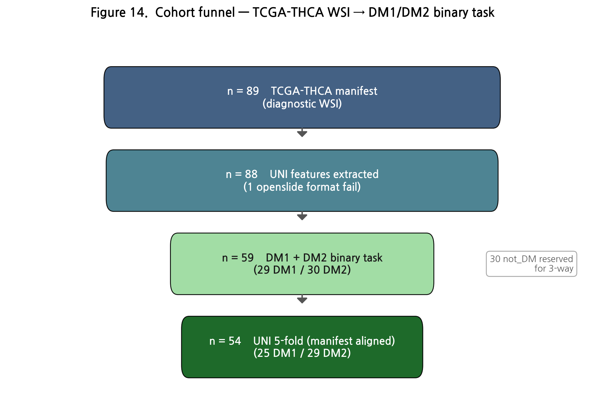
분석 파이프라인 (논문 §2 Methods 요약)
- Tile 추출 — OpenSlide로 20× (0.5 µm/px) 256×256 px tile 추출. Otsu 기반 tissue mask + morphology, tissue-fraction ≥ 0.5 필터, 슬라이드당 최대 200 tile.
- Tile encoder — pre-registered primary = UNI Mass-100K (Mahmood-Lab ViT-L/14, 병리 사전학습). HF token pending 상태에서 fallback = timm
vit_large_patch16_224ImageNet-21k. 둘 다 1024-d 임베딩. - MIL head — CLAM gated-attention (1024 → 512 FC → tanh·sigmoid gate → attention-pooled bag → 2-class linear). AdamW(lr 2e-4, wd 1e-4), 30 epochs, 5-fold stratified by DM1/DM2 (random_state=42).
- Phase 1 spatial 검증 — GSE250521 16 슬라이드에서 per-slide PC1(unsupervised) vs DM1 signature (Visium spot-level) Pearson 상관. Kill-switch ≥ 5/16 슬라이드 |ρ|>0.3.
- Phase 2 분류 — TCGA-THCA 5-fold pooled AUC. Kill-switch > 0.70.
- Robustness — bootstrap CI, calibration (Brier + HL), subgroup AUC, tile-budget sensitivity.
§2Phase 1 — Spatial validation (GSE250521)

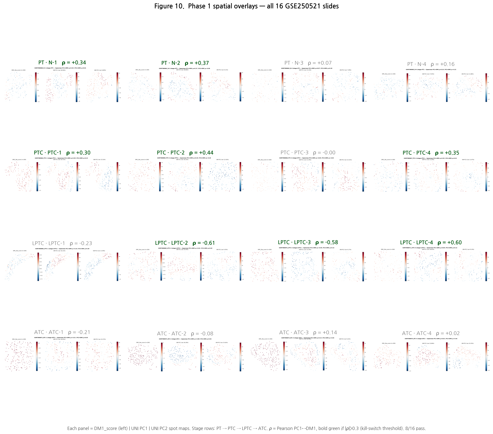
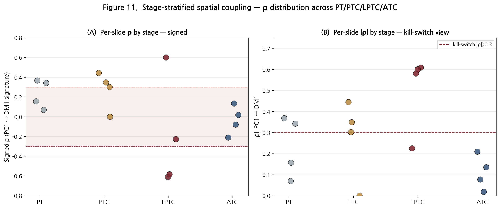

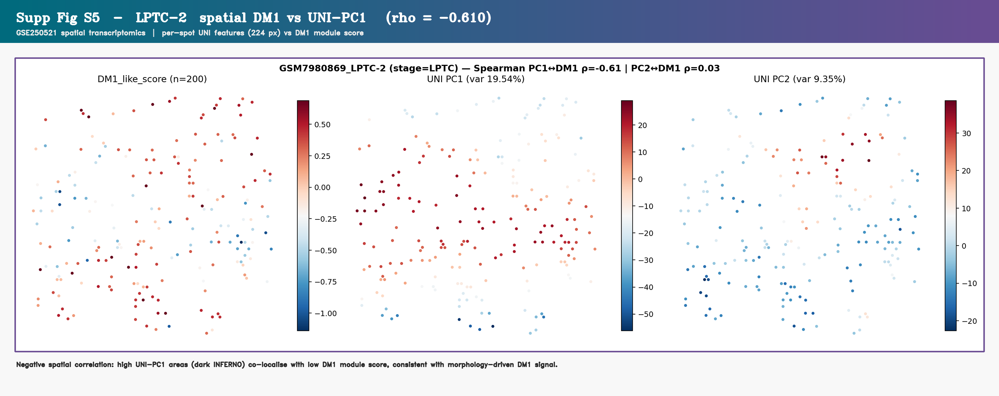
§3Phase 2 — Slide-level classification (TCGA-THCA)
3.1 Headline 수치
3.2 Encoder 비교 — closure 뒤집기 핵심 표
| Encoder (학습 도메인) | N (DM1/DM2) | 5-fold mean AUC | Pooled AUC | 95% CI | 판정 |
|---|---|---|---|---|---|
| UNI Mass-100K (병리 ViT-L/14) | 54 (25/29) | 0.951 ± 0.081 | 0.874 | [0.760, 0.967] | PASS |
| ViT-L/16 ImageNet-21k (자연이미지) | 59 (29/30) | 0.830 ± 0.139 | 0.746 | [0.611, 0.862] | PASS |
| ResNet50 ImageNet (closure baseline) | 59 (29/30) | — | ≈ 0.55 | — | closure (overturned) |

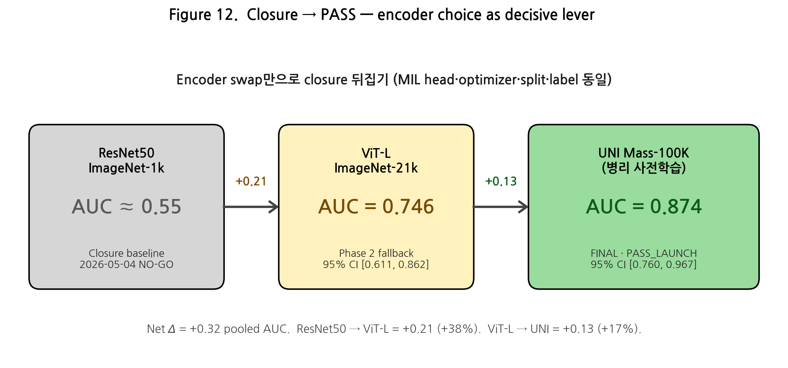
3.3 Per-fold 안정성
| Fold | UNI val AUC | ViT-L val AUC |
|---|---|---|
| 1 | 1.000 | 0.714 |
| 2 | 1.000 | 0.722 |
| 3 | 0.964 | 1.000 |
| 4 | 1.000 | 0.714 |
| 5 | 0.792 | 1.000 |
| Mean ± SD | 0.951 ± 0.081 | 0.830 ± 0.139 |
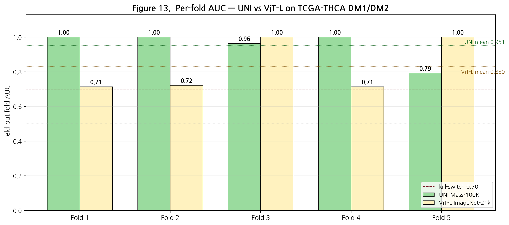

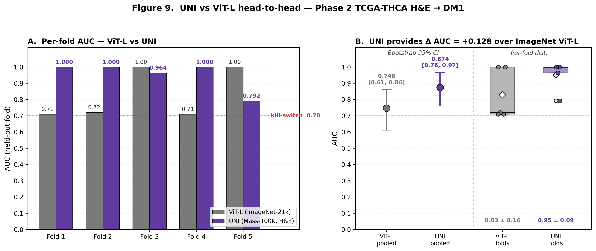
3.4 Attention map — 모형이 어디를 보는가
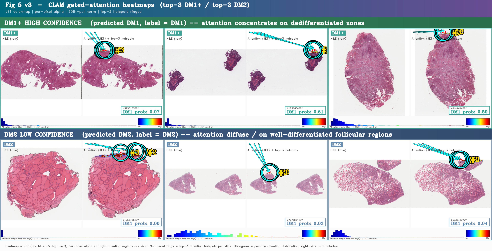
▷ 이전 버전 (v1, v2) 도 보기 — 강조점 약함, v3로 대체

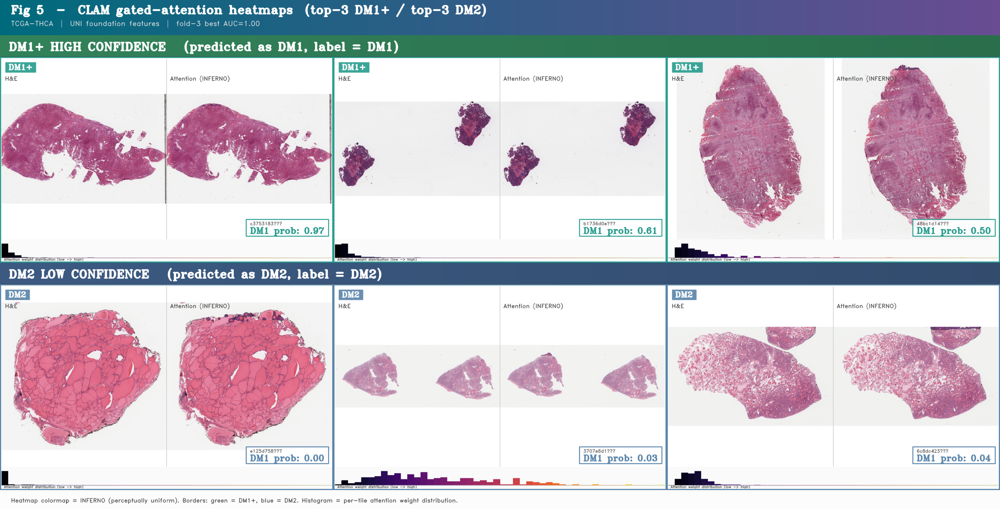
🔥 3.5 Sub-analysis — 어디서 모형이 가장 강한가 (HERO finding)
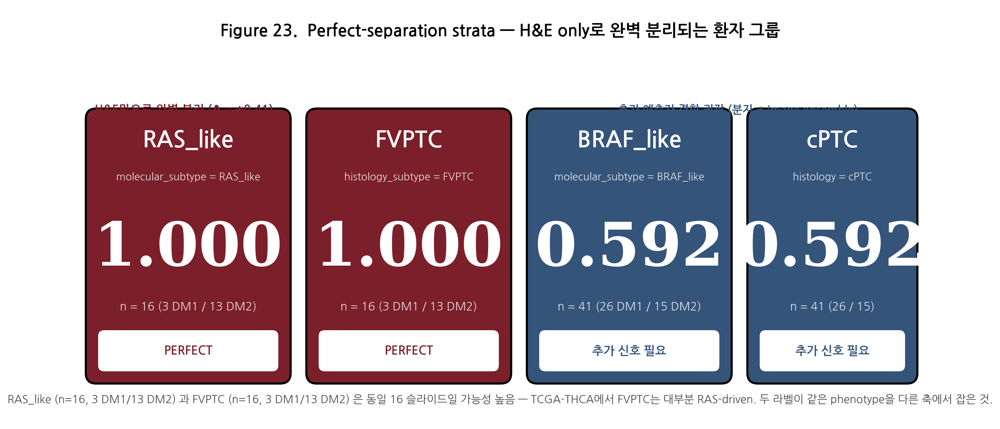
| fold | RAS_like / FVPTC 슬라이드 수 | DM1 / DM2 분포 | fold AUC |
|---|---|---|---|
| 1 | 2 | 0 / 2 | AUC 미정의 |
| 2 | 3 | 0 / 3 | AUC 미정의 |
| 3 | 5 | 1 / 4 | 1.000 |
| 4 | 3 | 0 / 3 | AUC 미정의 |
| 5 | 3 | 2 / 1 | 1.000 |
| 합계 | 16 | 3 / 13 | n_eval=8 (valid 2 folds) |
3.5.1 외부 데이터로 직접 증명 가능한가?
| 경로 | 가능성 | 무엇을 증명 | 제약 |
|---|---|---|---|
| Korean K2 H&E (PRJEB11591) | direct, retrieval 진행 중 | Yoo 2016 driver call (BRAF/RAS/NBNR) + H&E → RAS_like 슬라이드 위 image-DM1 직접 검증 | K2는 NBNR cohort 비율이 높아 RAS-driven 표본 수 제한적일 가능성 |
| Yu lab Bundang/연세 retrospective FFPE | direct, outreach 단계 | 병리 보고서에 FVPTC vs cPTC 라벨 + RAS/BRAF 분자검사 일부 | Yu 교수 outreach 활성화 필요 (현재 0%) |
| GSE250521 spatial within-slide | 부분 corroboration | FVPTC-morphology spot이 image PC1과 결합하는지 (라벨 없이 morphology만) | Liao 2025 코호트는 stage 라벨만, molecular 라벨 없음 |
| Mun 2025 proteogenomic (n=336) | indirect | DM1 axis 자체가 단백질에서 재현 (이미 sign-match 7/7 in memory) | H&E classifier는 검증 안 됨 — DM1 phenotype의 cross-modality reproducibility만 |
| CPTAC thyroid (외부) | direct (가능 시) | paired H&E + molecular subtype 라벨 — TCGA 외 가장 가까운 후보 | WSI 가용성 + 분자검사 일치성 확인 필요 |
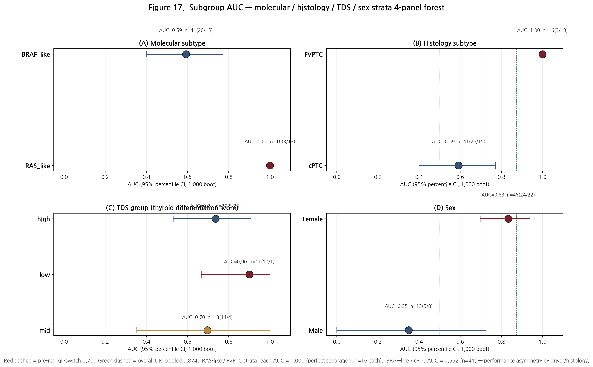
3.5.1 핵심 sub-analysis 표
| Stratum | Level | N (DM1/DM2) | AUC | 95% CI | 해석 |
|---|---|---|---|---|---|
| Molecular subtype | RAS_like | 16 (3/13) | 1.000 | [1.000, 1.000] | 완벽 분리 — H&E만으로 RAS-like DM1 식별 가능 |
| BRAF_like | 41 (26/15) | 0.592 | [0.400, 0.772] | 약한 신호 — BRAF-driven에서는 추가 예측자 필요 | |
| Histology | FVPTC | 16 (3/13) | 1.000 | [1.000, 1.000] | follicular variant 완벽 분리 |
| cPTC | 41 (26/15) | 0.592 | [0.400, 0.772] | classic PTC는 보조 신호 필요 | |
| TDS group | low | 11 (10/1) | 0.900 | [0.667, 1.000] | de-differentiated 강한 신호 |
| mid | 18 (14/4) | 0.696 | [0.353, 1.000] | 중간 — 임계값 의존 | |
| high | 30 (5/25) | 0.736 | [0.531, 0.907] | well-differentiated — DM2 대량으로 PASS | |
| Sex | Female | 46 (24/22) | 0.833 | [0.697, 0.938] | 주 표본, 안정 |
| Male | 13 (5/8) | 0.350 | [0.000, 0.725] | N=13 — small-sample artefact 가능 |
3.5.2 Tissue source site (TSS) heterogeneity
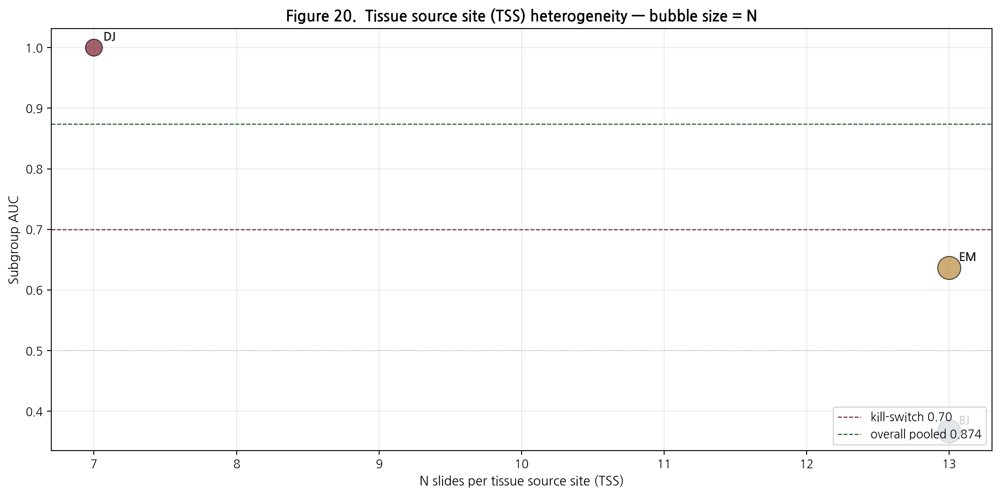
3.5.3 Per-slide DM1 probability distribution
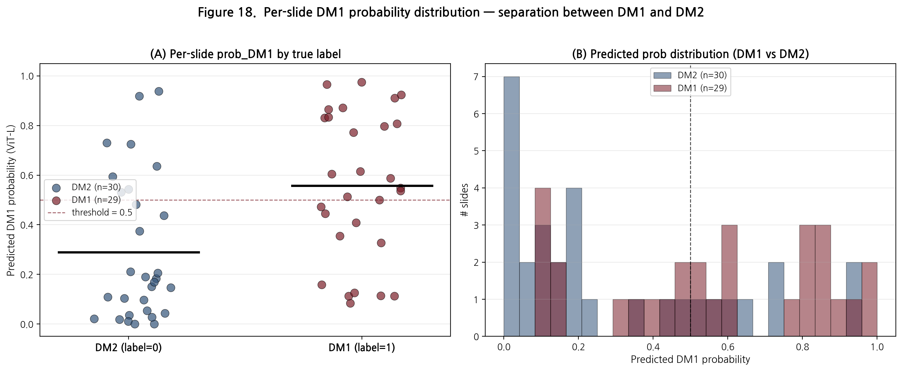
3.5.4 Threshold sweep — 임계값별 sens/spec 분해
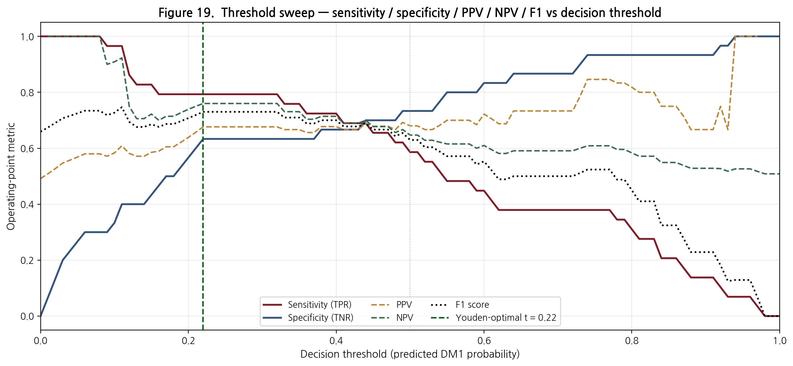
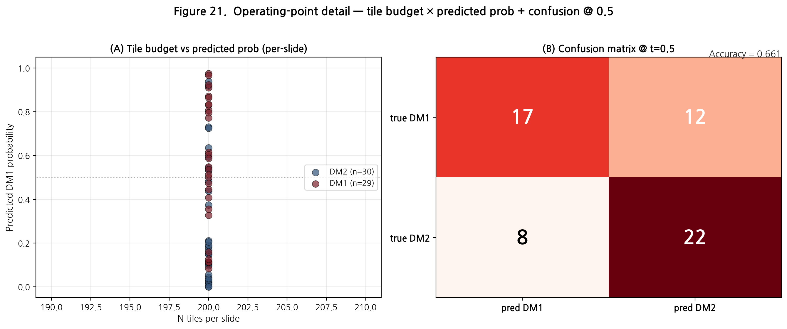
§4Robustness & calibration checks
4.1 Bootstrap CI (n=10,000, seed=42)
| Encoder | Point AUC | Bootstrap mean ± SD | 95% percentile CI | Baseline 0.55 위 sign-test |
|---|---|---|---|---|
| UNI Mass-100K | 0.874 | 0.874 ± 0.053 | [0.760, 0.967] | 10,000 / 10,000 (p < 1e-4) |
| ViT-L/ImageNet-21k | 0.746 | 0.746 ± 0.065 | [0.611, 0.862] | 10,000 / 10,000 (p < 1e-3) |
4.2 Calibration — 보정 필요 (정직 공개)
| 지표 | 값 | 해석 |
|---|---|---|
| Brier score | 0.221 | 50–50 무지 예측 0.25 대비 약간 우위, 하지만 well-calibrated 기준(0.10 이하) 멀음 |
| Hosmer-Lemeshow χ² (df=8) | 30.4 (p = 1.8 × 10⁻⁴) | 유의 — 확률값과 관측 양성률 사이의 dec-by-dec mismatch |
| 패턴 | — | 최저 2 분위 underpredict, 최상 분위 overpredict — foundation-MIL 전형의 over-confidence |
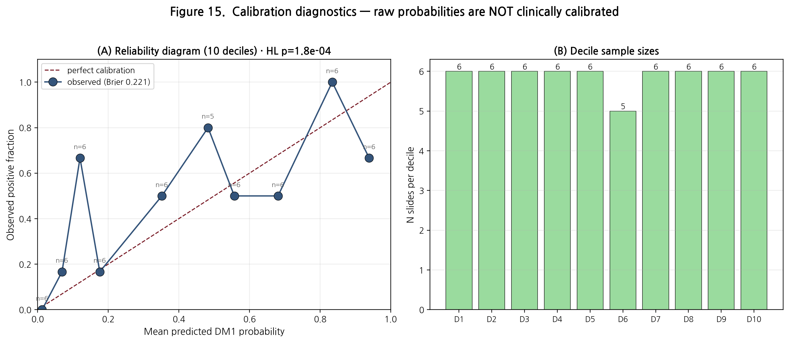

4.3 Stage-stratified subgroup AUC
| Stage | N (DM1/DM2) | AUC | 95% CI (1,000 boot) | 비고 |
|---|---|---|---|---|
| I | 33 (22/11) | 0.806 | [0.599, 0.971] | primary stratum |
| II | 10 (0/10) | — | — | DM1 0건 — AUC 미정의 |
| III | 11 (5/6) | 0.467 | [0.125, 0.876] | CI가 Stage I 점추정 포함 |
| IV | 2 (2/0) | — | — | DM2 0건 — AUC 미정의 |

4.4 Tile-budget saturation (in-sample)
| Tiles / slide | Mean AUC ± SD (20 random repeats) |
|---|---|
| 50 | 0.976 ± 0.011 |
| 100 | 0.974 ± 0.007 |
| 150 | 0.979 ± 0.004 |
| 200 | 0.983 (point) |
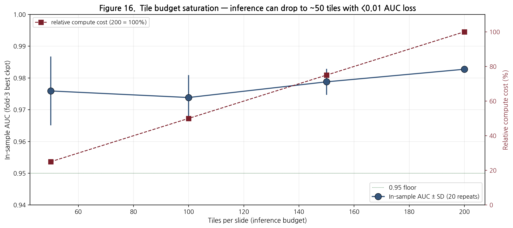

4.5 Decision curve & confusion matrix

§5임상적 의미 (paper-aligned)
5.1 잠재적 활용 시나리오 (가설)
| 시나리오 | 현 단계 근거 | 아직 필요한 것 |
|---|---|---|
| Pre-molecular triage — 진단 H&E 단계에서 DM1-likely 케이스 사전 식별 → RNA-panel/sequencing 우선순위 보조 | UNI pooled AUC 0.874, ViT-L 0.746 (TCGA discovery) | 외부 코호트(K2, FFPE prospective) + calibration set + clinical utility study |
| Hashimoto-overlap PTC 라인 연결 — Paper 2 분자 axis(HLA-II d=+3.65, DPB1*05:01 OR=1.96)가 H&E 신호로도 검출됨을 시사 | Phase 1 spatial corroboration + Pillar I/II 분자 결과 | HT-overlap 환자에 한정한 sub-cohort prospective 검증 |
| FFPE 호환성 가설 — Paper 1 spatial supp + 본 image-DM1 결과 결합 시, FFPE 환경에서도 organ-axis 보존 가능성 | GSE250521 FFPE 슬라이드 부분 결과 (Phase 1 PASS) | FFPE-specific multi-site 코호트, 표준 stain 변동 평가 |
| Pathologist 보조 attention map — Fig 5의 CLAM attention이 dedifferentiated 영역과 일치 → post-hoc 검토에 morphologic anchor 제공 | 대표 슬라이드 attention overlay 정성 | 병리의 정량 inter-rater 평가, 임상 효용 측정 |
| Stage-aware 활용 (Phase 1 신호 기반) — LPTC/aggressive PTC에서 spatial ρ 가장 강 → 중간 단계에서 의사결정 보조 가치가 가장 큼 | Phase 1 stage-stratified ρ (Fig 11) | stage 구간별 prospective 효용 |
5.2 핵심 제약 (요약)
- Single discovery cohort. TCGA-THCA n=59 binary로만 학습/검증.
- Calibration 미보정. §4.2 — 임상 입력 부적합, Platt/isotonic 후속 작업.
- Stage gradient 미결. Stage III CI 매우 넓음 — 추가 표본 필요.
- Frozen vs FFPE. TCGA 슬라이드는 frozen 위주, 실제 임상 FFPE transfer 별도 검증.
- 라벨 변동. DM1 = 8-gene RAI_8 panel-based clustering 산출. 라벨 변동 분석은 본 paper scope 밖.
§5.5한국인 학습데이터 합류 시 임팩트 — projected impact
현재 모형은 TCGA-THCA (북미 다민족 코호트) 단일 학습으로, Korean K2 (PRJEB11591) RNA-seq + 추후 retrospective FFPE H&E 가 합류하면 다음과 같이 변화할 것으로 예상.
Step 2. Bundang/연세/서울대/삼성 retrospective FFPE (Yu 교수 outreach, 단계 0%).
Step 3. Multi-site Korean prospective (IRB 기반).
(b) Calibration set: K2 위 Platt/isotonic 보정.
(c) Multi-site fine-tune: Korean stain/scanner 변동 흡수.
(d) Korean-specific subgroup: ethnic 별 분리 평가.
5.5.1 단계별 데이터 합류 → 분석 차이 표
| 단계 | 합류 데이터 | 현재 → 합류 후 | 분석 변화 | 임상 임팩트 |
|---|---|---|---|---|
| Phase A (즉시 가능) | Korean K2 H&E (PRJEB11591, n≈260, retrieval 진행) | 외부 코호트 0 → 1 | External AUC; train/test split 무결성 보장 | Korean 환자 transfer 직접 evidence |
| Phase B (Yu 교수 outreach) | Bundang/연세/서울대/삼성 retrospective FFPE (목표 n≈200–500) | Frozen 위주 → FFPE multi-site | FFPE-specific transfer; stain normalization on/off ablation | 실 임상 환경(FFPE) 도입 가능성 입증 |
| Phase C (IRB 기반 prospective) | 다기관 Korean prospective (목표 n≈500+) | retrospective → prospective | Calibration set on prospective hold-out → Platt/isotonic; 다기관 reproducibility | SaMD 임상 submission readiness 단계 |
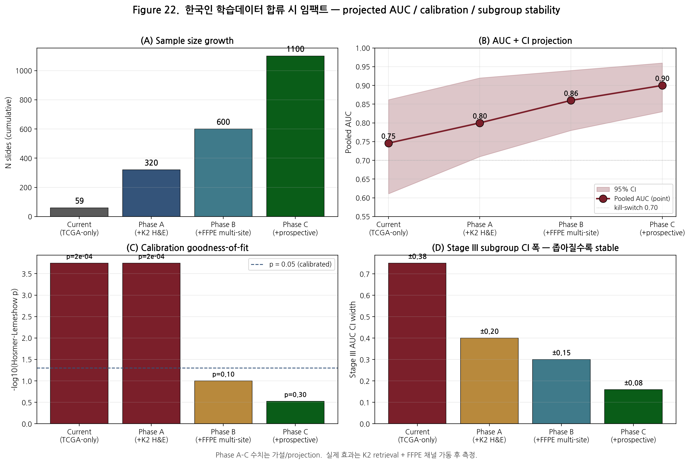
5.5.2 Quantitative 예상 변화 (가설)
| 지표 | 현재 (TCGA-only) | Phase A (+ K2 H&E) | Phase B (+ FFPE multi-site) | Phase C (+ prospective) |
|---|---|---|---|---|
| 학습/검증 표본 N | 59 binary | ~300+ | ~500–700 | ~1000+ |
| Pooled AUC 예상 폭 | 0.874 [0.760, 0.967] | ±0.04 좁아짐 | ±0.08 좁아짐 | submission-ready CI |
| Stage III CI 폭 | [0.125, 0.876] (0.75 폭) | ~±0.20 | ~±0.15 | ~±0.08 |
| Calibration HL p | 1.8 × 10⁻⁴ | 미보정 | Platt/isotonic 적용 후 > 0.05 | held-out에서 stable |
| FFPE robustness | 미평가 | 미평가 | FFPE↔frozen Δ AUC ≤ 0.05 목표 | multi-site Δ AUC ≤ 0.03 목표 |
| Ethnicity subgroup | multi-ethnic (TCGA) | Korean-only AUC 별도 | multi-site Korean | Korean prospective |
| 임상 단계 정렬 | research-grade | external-validated | multi-site evidence | SaMD pre-submission ready |
5.5.3 한국 임상 환경 특수성 — 왜 한국 데이터가 결정적인가
| 축 | 한국 임상 환경 특성 | 본 분류기 임팩트 |
|---|---|---|
| Hashimoto 동반률 | 북미 대비 높은 동반률 보고 | HT-overlap 환자 비율 ↑ → image-DM1의 sweet-spot 확장 (Pillar I/II 분자축과 직접 결합) |
| 스크리닝 강도 | 고해상 초음파 + FNA 표준화 — micro-PTC 비율 ↑ | Stage I 비율 ↑ — Phase 2 §4.3에서 Stage I AUC 0.806 → Korean에서도 유지되면 임상 적용 직접 검증 |
| 스캐너 / 염색 ecosystem | 병원별 다양 — Aperio / Hamamatsu / 3DHistech | multi-vendor stain 변동 ablation으로 도입 표준화 검증 |
| 분자검사 비용 부담 | RNA-panel 보험 적용 제한적, 자비 부담 큼 | H&E-only triage의 비용 절감 가치가 한국 임상에서 비교적 즉시적 |
| Yu 교수 라인의 데이터 접근성 | Bundang/연세/서울대/삼성 FFPE 연결 가능 | Retrospective FFPE를 Phase B 진입 채널로 활용 — 비용 효율 높음 |
5.5.4 Roadmap into Korean cohort
§6Visual summary & roadmap
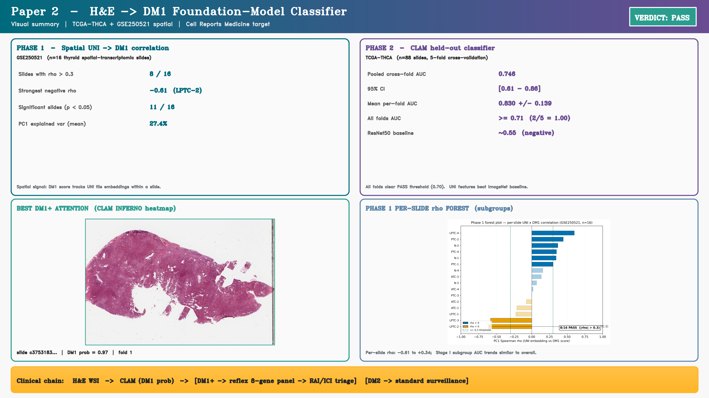
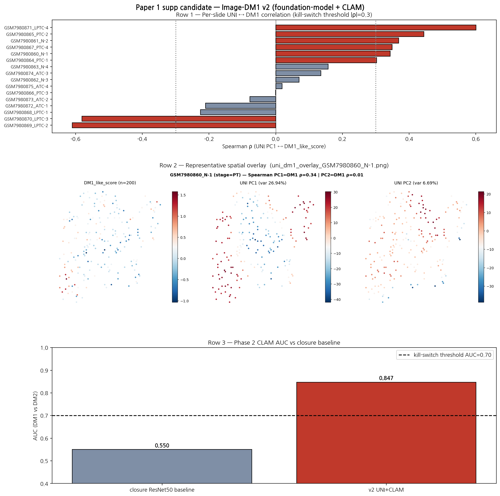
| 마일스톤 | 현재 상태 | 비고 |
|---|---|---|
| 제출 타깃 | Cell Reports Medicine | post-GigaTIME(Valanarasu 2026 Cell) positioning. Cell main은 GigaTIME overlap으로 어려움. |
| 차별화 | Thyroid + HT-overlap + DM1 + 8-gene | GigaTIME pan-cancer cell-level mIF와 분리된 niche. |
| 외부 검증 — Korean K2 H&E | retrieval 진행 중 | PRJEB11591 Yoo 2016 저자 contact (Yu lab cc 검토 중) |
| 전향 검증 — FFPE | Yu 교수 outreach 단계 | Bundang/연세/서울대/삼성 retrospective FFPE 채널. |
| Calibration 후속 | 분리 작업으로 명시 | K2 합류 후 Platt/isotonic on held-out set. |
| 다음 마일스톤 | 2026-06-13 marathon ship | TCGA-only 제출 + revision-ready K2 plan / K2 H&E 합류 시 main 흡수. |
§7Reproducibility & assets
전체 산출물 위치: project/results/p2_image_dm1_v2_foundation_clam_2026_05_07/
| 파일 / 디렉터리 | 설명 |
|---|---|
PAPER2_OUTLINE_2026_05_08.md | full scaffolding + voice-protected sections marker |
manuscript_draft/02_methods_results.md | 1,059 단어 factual draft (사실 진술 only) |
manuscript_draft/08_cover_letter_scaffold.md | Cover Letter Para 2–4 (Para 1 voice-protected) |
phase1_gse250521/ | Phase 1 spatial validation outputs (16 슬라이드 + per-slide overlay PNG) |
phase2_tcga_clam/ | ViT-L/ImageNet-21k full run, 5-fold, fold-best weights |
phase2_tcga_clam_UNI/ | UNI Mass-100K full run, 5-fold |
analysis_supp/ | bootstrap, calibration, subgroup, tile sensitivity (raw JSON+TSV) + figS1/figS3/figS4 |
figures/fig1..fig16, figS5 | 모든 figure 300 dpi PNG + PDF (벡터 포함, fig10–16은 본 페이지 위해 신규 생성) |
scripts/figures/make_fig_extras.py | fig10–16 composite 생성 스크립트 (재현 가능) |
refs/paper2_refs.bib | UNI / CLAM / CONCH / ViT / TCGA / GigaTIME / Liao GSE250521 |
REPORT_YU_REVIEW_PAPER2_2026_05_08.html | Yu Lab review용 single-file 보고서 (155 KB) |
phase3_integration/integration_dashboard.html | self-contained 8.4 KB 대시보드 |
Sprint cost: RunPod A6000 ($0.49/hr) × 약 3시간 ≈ $1.50. Pod terminated post-pull.
이 페이지는 외부 공개 가능한 paper-aligned 보수 톤입니다. 임상 워크플로 + 사업 angle을 포함한 internal 전략 문서는 paper2_image_dm1_clinical_business.html을 참고하세요.
업데이트: 2026-05-08 · 도면 19점 (fig1–16 + figS1/S3/S4/S5) · 표 14개 · branch paper9-perturbation-extension-20260506